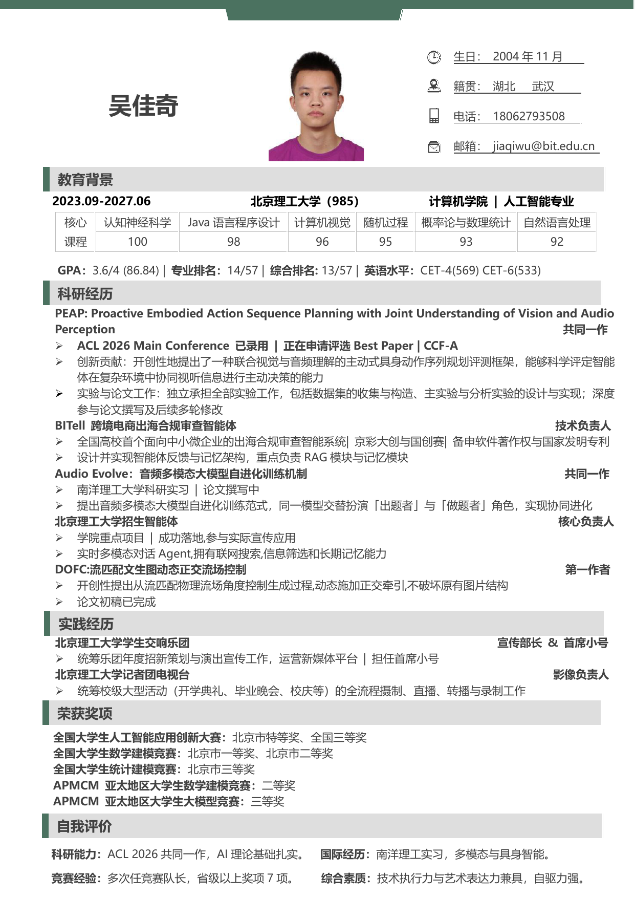

北京理工大学（985）
计算机学院 · 人工智能专业
GPA：3.6/4（86.84）｜专业排名：14/57｜综合排名：13/57｜英语水平：CET-4（569）、CET-6（533）
Education
计算机学院 · 人工智能专业
GPA：3.6/4（86.84）｜专业排名：14/57｜综合排名：13/57｜英语水平：CET-4（569）、CET-6（533）
Research
共同一作
技术负责人
共同一作
核心负责人
第一作者
Activities
宣传部长 & 首席小号
统筹乐团年度招新策划与演出宣传工作，运营新媒体平台；担任首席小号。
影像负责人
统筹开学典礼、毕业晚会、校庆等校级大型活动的摄制、直播、转播与录制工作。
Awards
Profile
科研能力：ACL 2026 共同一作，AI 理论基础扎实。
国际经历：南洋理工大学实习，聚焦多模态与具身智能。
竞赛经验：多次担任竞赛队长，省级以上奖项 7 项。
综合素质：技术执行力与艺术表达力兼具，自驱力强。
Preview

Contact
如需了解更多科研经历、项目细节或完整简历，可通过邮箱联系。